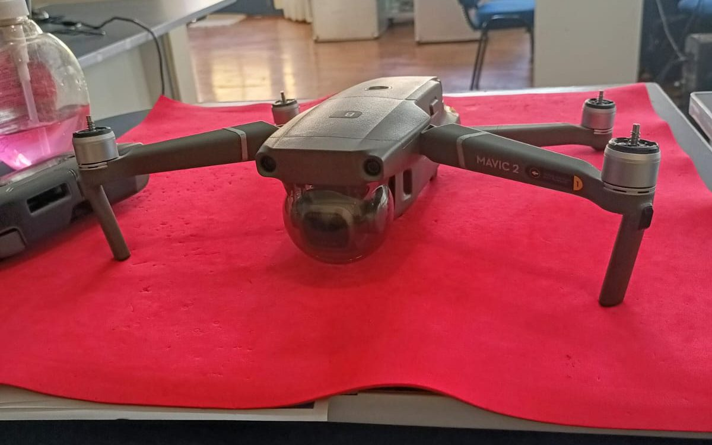
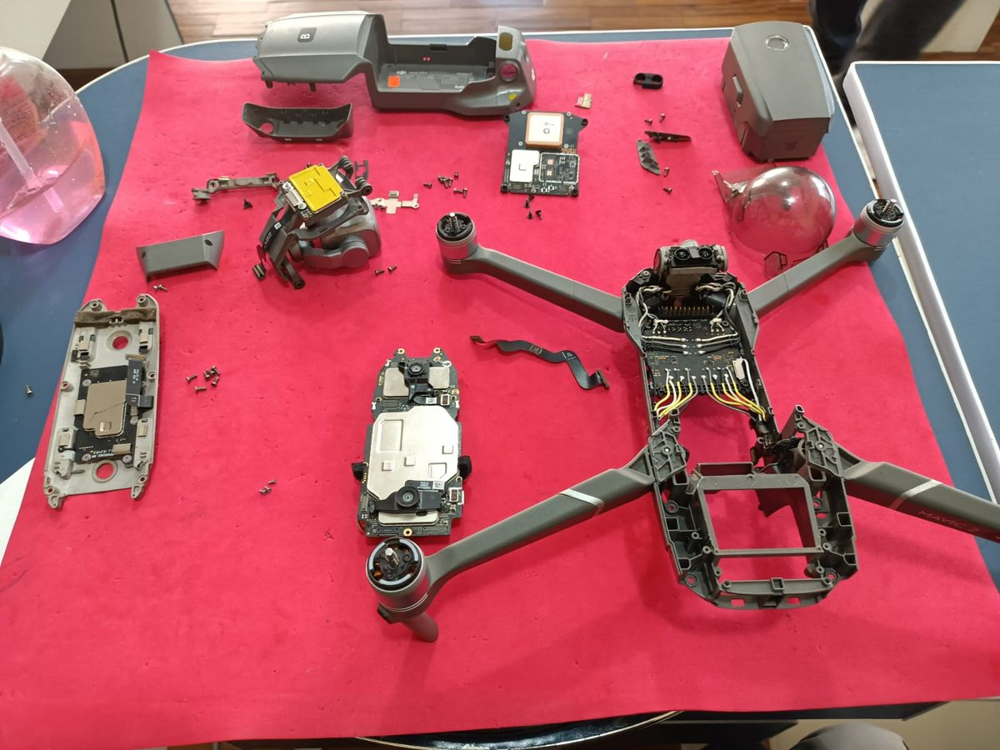
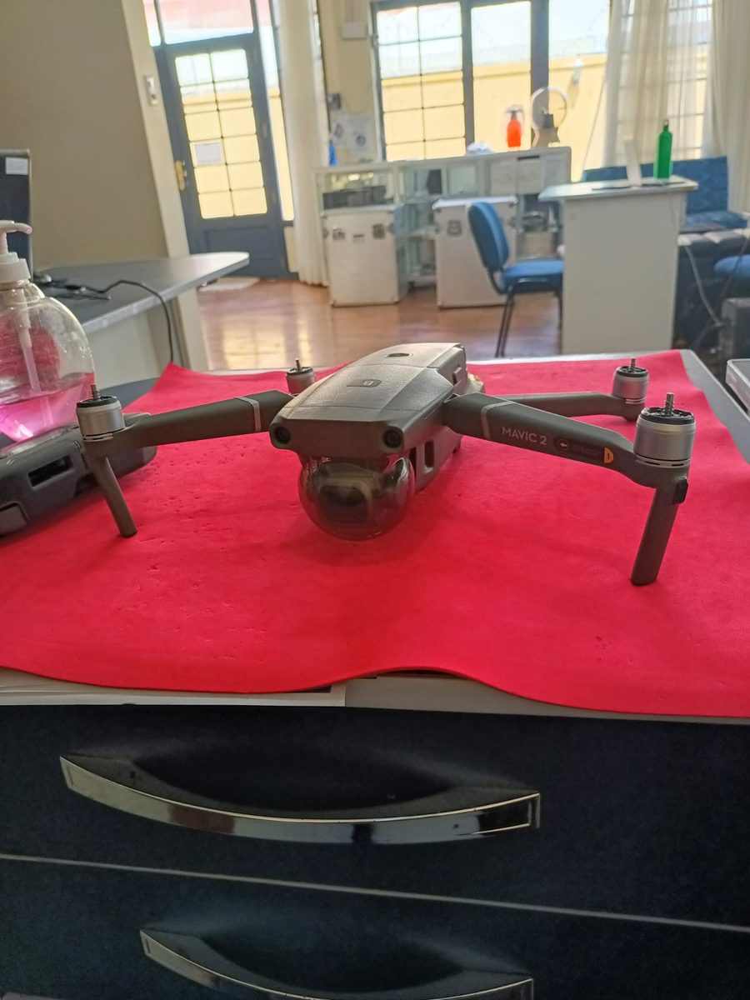

Reparación y mantenimiento de drones, de la recepción a la entrega.
Una plataforma para llevar el control de cada equipo que ingresa a Drontec: la cotización preliminar, el recojo, el diagnóstico, la reparación con repuestos, el cobro y la entrega, con seguimiento por código de orden.

El recorrido de una orden de servicio, desde que llega la consulta hasta que el dron vuelve a su dueño.
La persona envía fotos y una descripción de la falla y recibe un precio estimado, no vinculante.
El equipo llega al taller en persona o por recojo en la dirección del cliente. Se registra con sus accesorios y se genera la orden con su código.
El jefe asigna un técnico, que revisa el equipo, determina la falla e indica los repuestos necesarios.
Se arma la cotización final y el cliente la aprueba o la rechaza antes de empezar la reparación.
El técnico repara el equipo y el encargado de inventario controla los repuestos del servicio técnico.
Se registra el pago interno, se entrega el equipo y la orden queda cerrada, con todo su historial.
El cliente puede consultar el estado de su equipo en cualquier momento con el código de su orden.
El trabajo en el taller: cada equipo se revisa pieza por pieza antes de cotizar la reparación.


Cada persona ve solo lo que le corresponde según su rol. Además, el Administrador gestiona los usuarios del sistema.
Consulta el estado de su equipo con el código de la orden. No necesita usuario ni contraseña.
Registra equipos, crea y asigna órdenes, arma cotizaciones y supervisa el servicio.
Ve las órdenes que le asignaron, diagnostica, repara y actualiza el estado.
Controla las entradas, salidas y el stock de los repuestos del servicio técnico.
El análisis y diseño del sistema, organizado en tres partes.
Introducción, antecedentes, planteamiento y árbol de problemas, propósito, método, justificación, alcances y planificación.
Abrir →Modelo ambiental, diagramas de flujo de datos, entidad-relación, diccionario de datos y transición de estados.
Abrir →Diagrama de clases, casos de uso de sistema y de negocio, y caso de uso de tipo texto expandido.
Abrir →El trabajo se publica de forma iterativa e incremental: cada parte se completa y se corrige conforme avanza el proyecto.